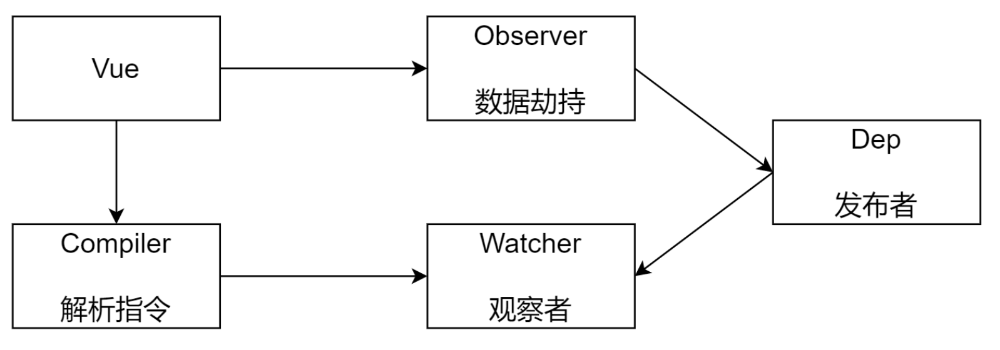
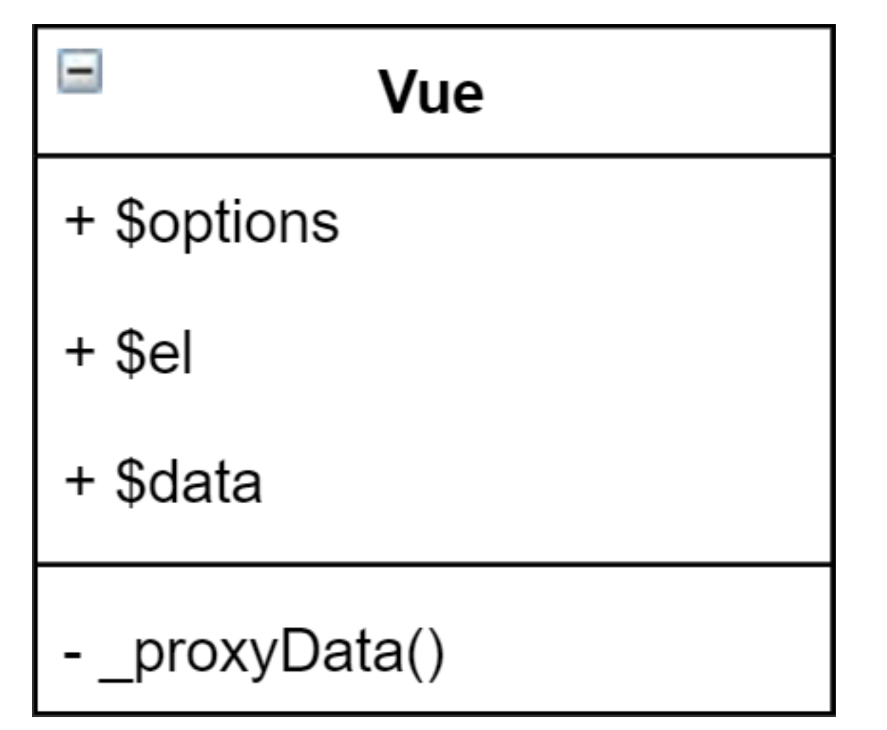
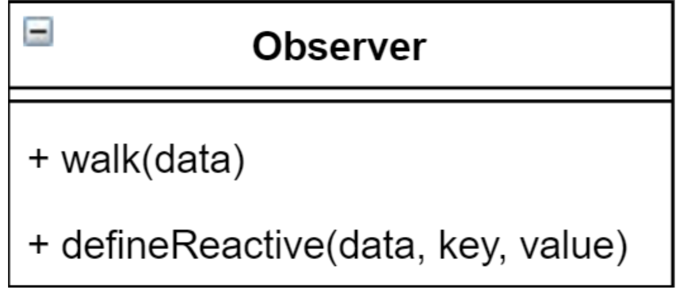
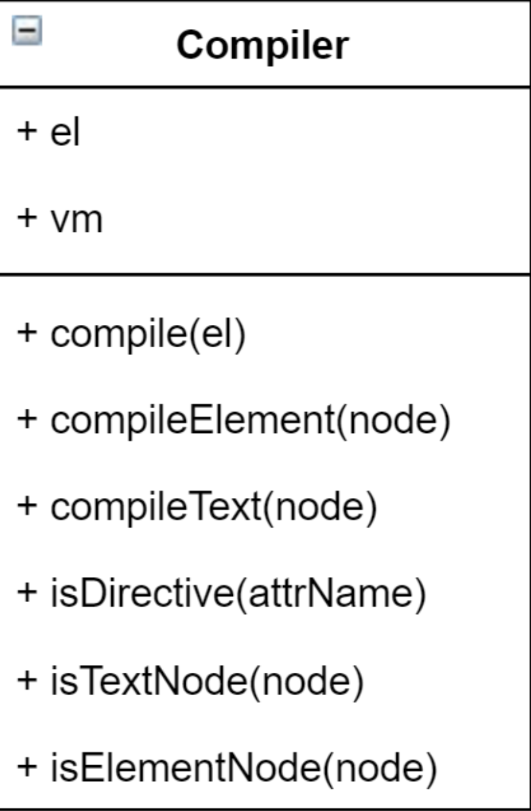
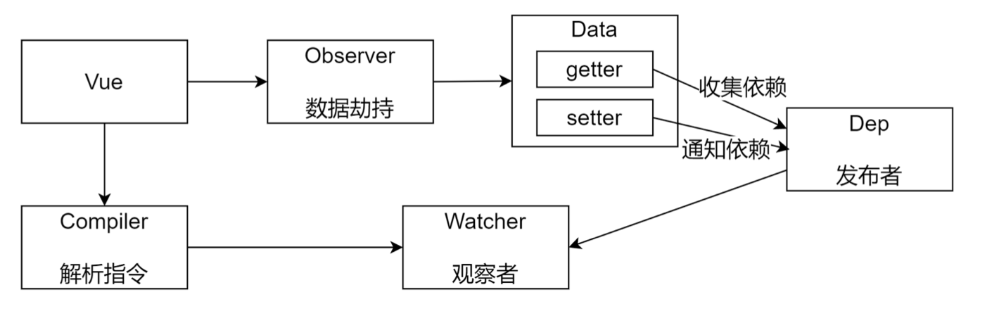
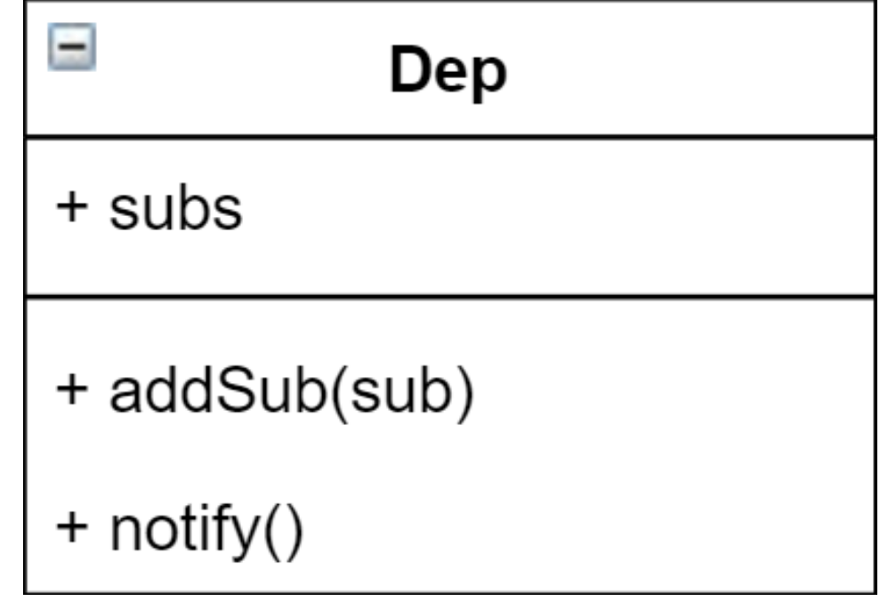
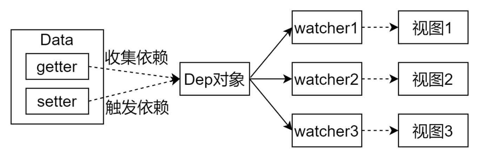
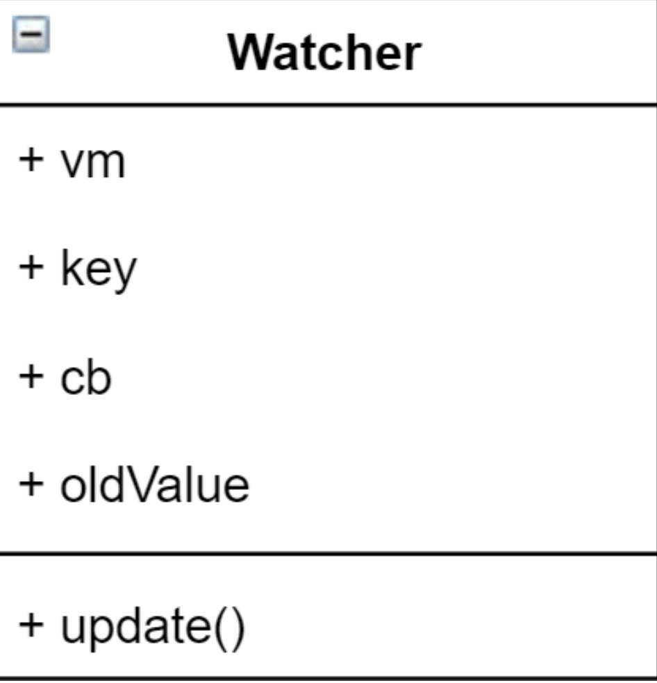
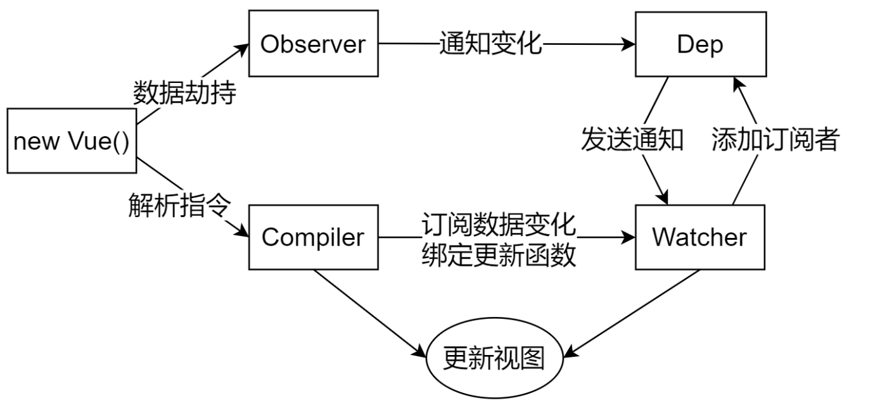

# 数据驱动
- 数据响应式、双向绑定、数据驱动
- 数据响应式
- 数据模型仅仅是普通的
JavaScript对象，而当我们修改数据时，视图会进行更新，避免了繁琐的DOM操作提高开发效率
- 数据模型仅仅是普通的
- 双向绑定
- 数据改变，视图改变;视图改变，数据也随之改变
- 我们可以使用
v-model在表单元素上创建双向数据绑定
- 数据驱动是
Vue最独特的特性之一- 开发过程中仅需要关注数据本身，不需要关心数据是如何渲染到视图
# 数据响应式的核心原理
# Vue 2.x
- Vue 2.x深入响应式原理 (opens new window)
- MDN - Object.defineProperty (opens new window)
- 浏览器兼容 IE8 以上(不兼容 IE8)
// 模拟 Vue 中的 data 选项
let data = {
msg: 'hello'
}
// 模拟 Vue 的实例
let vm = {}
// 数据劫持:当访问或者设置 vm 中的成员的时候，做一些干预操作
Object.defineProperty(vm, 'msg', {
// 可枚举(可遍历)
enumerable: true,
// 可配置(可以使用 delete 删除，可以通过 defineProperty 重新定义)
configurable: true,
// 当获取值的时候执行
get () {
console.log('get: ', data.msg)
return data.msg
},
// 当设置值的时候执行
set (newValue) {
console.log('set: ', newValue)
if (newValue === data.msg) {
return
}
data.msg = newValue
// 数据更改，更新 DOM 的值
document.querySelector('#app').textContent = data.msg
}
})
// 测试
vm.msg = 'Hello World'
console.log(vm.msg)
如果有一个对象中多个属性需要转换
getter/setter如何处理?
# Vue 3.x
- MDN - Proxy (opens new window)
- 直接监听对象，而非属性
ES 6中新增，IE不支持，性能由浏览器优化
// 模拟 Vue 中的 data 选项
let data = {
msg: 'hello',
count: 0
}
// 模拟 Vue 实例
let vm = new Proxy(data, {
// 当访问 vm 的成员会执行
get (target, key) {
console.log('get, key: ', key, target[key])
return target[key]
},
// 当设置 vm 的成员会执行
set (target, key, newValue) {
console.log('set, key: ', key, newValue)
if (target[key] === newValue) {
return
}
target[key] = newValue
document.querySelector('#app').textContent = target[key]
}
})
// 测试
vm.msg = 'Hello World'
console.log(vm.msg)
# 发布订阅模式和观察者模式
# 发布/订阅模式
- 发布/订阅模式
- 订阅者
- 发布者
- 信号中心
我们假定，存在一个"信号中心"，某个任务执行完成，就向信号中心"发布"(publish)一个信 号，其他任务可以向信号中心"订阅"(subscribe)这个信号，从而知道什么时候自己可以开始执 行。这就叫做"发布/订阅模式"(publish-subscribe pattern)
Vue 的自定义事件
let vm = new Vue()
vm.$on('dataChange', () => { console.log('dataChange')})
vm.$on('dataChange', () => {
console.log('dataChange1')
})
vm.$emit('dataChange')
兄弟组件通信过程
// eventBus.js
// 事件中心
let eventHub = new Vue()
// ComponentA.vue
// 发布者
addTodo: function () {
// 发布消息(事件)
eventHub.$emit('add-todo', { text: this.newTodoText })
this.newTodoText = ''
}
// ComponentB.vue
// 订阅者
created: function () {
// 订阅消息(事件)
eventHub.$on('add-todo', this.addTodo)
}
模拟 Vue 自定义事件的实现
class EventEmitter {
constructor(){
// { eventType: [ handler1, handler2 ] }
this.subs = {}
}
// 订阅通知
$on(eventType, fn) {
this.subs[eventType] = this.subs[eventType] || []
this.subs[eventType].push(fn)
}
// 发布通知
$emit(eventType) {
if(this.subs[eventType]) {
this.subs[eventType].forEach(v=>v())
}
}
}
// 测试
var bus = new EventEmitter()
// 注册事件
bus.$on('click', function () {
console.log('click')
})
bus.$on('click', function () {
console.log('click1')
})
// 触发事件
bus.$emit('click')
# 观察者模式
- 观察者(订阅者) --
Watcherupdate():当事件发生时，具体要做的事情
- 目标(发布者) --
Depsubs数组:存储所有的观察者addSub():添加观察者notify():当事件发生，调用所有观察者的update()方法
- 没有事件中心
// 目标(发布者)
// Dependency
class Dep {
constructor () {
// 存储所有的观察者
this.subs = []
}
// 添加观察者
addSub (sub) {
if (sub && sub.update) {
this.subs.push(sub)
}
}
// 通知所有观察者
notify () {
this.subs.forEach(sub => sub.update())
}
}
// 观察者(订阅者)
class Watcher {
update () {
console.log('update')
}
}
// 测试
let dep = new Dep()
let watcher = new Watcher()
dep.addSub(watcher)
dep.notify()
# 总结
- 观察者模式是由具体目标调度，比如当事件触发，
Dep就会去调用观察者的方法，所以观察者模 式的订阅者与发布者之间是存在依赖的 - 发布/订阅模式由统一调度中心调用，因此发布者和订阅者不需要知道对方的存在

# Vue 响应式原理模拟
# 整体分析
- Vue 基本结构
- 打印 Vue 实例观察
- 整体结构

Vue: 把data中的成员注入到Vue实例，并且把data中的成员转成getter/setterObserver：能够对数据对象的所有属性进行监听，如有变动可拿到最新值并通知DepCompiler：解析每个元素中的指令/插值表达式，并替换成相应的数据Dep：添加观察者(watcher)，当数据变化通知所有观察者Watcher：数据变化更新视图
# Vue
- 功能
- 负责接收初始化的参数(选项)
- 负责把
data中的属性注入到Vue实例，转换成getter/setter - 负责调用
observer监听data中所有属性的变化 - 负责调用
compiler解析指令/插值表达式
- 结构

class Vue {
constructor (options) {
// 1. 保存选项的数据
this.$options = options || {}
this.$data = options.data || {}
const el = options.el
this.$el = typeof options.el === 'string' ? document.querySelector(el) : el
// 2. 负责把 data 注入到 Vue 实例
this._proxyData(this.$data)
// 3. 负责调用 Observer 实现数据劫持
// 4. 负责调用 Compiler 解析指令/插值表达式等
}
_proxyData (data) {
// 遍历 data 的所有属性
Object.keys(data).forEach(key => {
Object.defineProperty(this, key, {
get () {
return data[key]
},
set (newValue) {
if (data[key] === newValue) {
return
}
data[key] = newValue
}
})
})
}
}
# Observer
- 功能
- 负责把
data选项中的属性转换成响应式数据 data中的某个属性也是对象，把该属性转换成响应式数据- 数据变化发送通知
- 负责把
- 结构

// 负责数据劫持
// 把 $data 中的成员转换成 getter/setter
class Observer {
constructor (data) {
this.walk(data)
}
// 1. 判断数据是否是对象，如果不是对象返回
// 2. 如果是对象，遍历对象的所有属性，设置为 getter/setter
walk (data) {
if (!data || typeof data !== 'object') {
return
}
// 遍历 data 的所有成员
Object.keys(data).forEach(key => {
this.defineReactive(data, key, data[key])
})
}
// 定义响应式成员
defineReactive (data, key, val) {
const that = this
// 如果 val 是对象，继续设置它下面的成员为响应式数据
this.walk(val)
Object.defineProperty(data, key, {
configurable: true,
enumerable: true,
get () {
return val
},
set (newValue) {
if (newValue === val) {
return
}
// 如果 newValue 是对象，设置 newValue 的成员为响应式
that.walk(newValue)
val = newValue
}
})
}
}
# Compiler
- 功能
- 负责编译模板，解析指令/插值表达式
- 负责页面的首次渲染
- 当数据变化后重新渲染视图
- 结构

1. compile()
// 负责解析指令/插值表达式
class Compiler {
constructor (vm) {
this.vm = vm
this.el = vm.$el
// 编译模板
this.compile(this.el)
}
// 编译模板
// 处理文本节点和元素节点
compile (el) {
const nodes = el.childNodes
Array.from(nodes).forEach(node => {
// 判断是文本节点还是元素节点
if (this.isTextNode(node)) {
this.compileText(node)
} else if (this.isElementNode(node)) {
this.compileElement(node)
}
if (node.childNodes && node.childNodes.length) {
// 如果当前节点中还有子节点，递归编译
this.compile(node)
}
})
}
// 判断是否是文本节点
isTextNode (node) {
return node.nodeType === 3
}
// 判断是否是属性节点
isElementNode (node) {
return node.nodeType === 1
}
// 判断是否是以 v- 开头的指令
isDirective (attrName) {
return attrName.startsWith('v-')
}
// 编译文本节点
compileText (node) { }
// 编译属性节点
compileElement (node) { }
}
2. compileText()
- 负责编译插值表达式
// 编译文本节点
compileText (node) {
const reg = /\{\{(.+)\}\}/
// 获取文本节点的内容
const value = node.textContent
if (reg.test(value)) {
// 插值表达式中的值就是我们要的属性名称
const key = RegExp.$1.trim()
// 把插值表达式替换成具体的值
node.textContent = value.replace(reg, this.vm[key])
}
}
3. compileElement()
- 负责编译元素的指令
- 处理
v-text的首次渲染 - 处理
v-model的首次渲染
// 编译属性节点
compileElement (node) {
// 遍历元素节点中的所有属性，找到指令
Array.from(node.attributes).forEach(attr => {
// 获取元素属性的名称
let attrName = attr.name
// 判断当前的属性名称是否是指令
if (this.isDirective(attrName)) {
// attrName 的形式 v-text v-model
// 截取属性的名称，获取 text model
attrName = attrName.substr(2)
// 获取属性的名称，属性的名称就是我们数据对象的属性 v-text="name"，获取的是name
const key = attr.value
// 处理不同的指令
this.update(node, key, attrName)
}
})
}
// 负责更新 DOM
// 创建 Watcher
update (node, key, dir) {
// node 节点，key 数据的属性名称，dir 指令的后半部分
const updaterFn = this[dir + 'Updater']
updaterFn && updaterFn(node, this.vm[key])
}
// v-text 指令的更新方法
textUpdater (node, value) {
node.textContent = value
}
// v-model 指令的更新方法
modelUpdater (node, value) {
node.value = value
}
# Dep(Dependency)

- 功能
- 收集依赖，添加观察者(
watcher) - 通知所有观察者
- 收集依赖，添加观察者(
- 结构

class Dep {
constructor () {
// 存储所有的观察者
this.subs = []
}
// 添加观察者
addSub (sub) {
if (sub && sub.update) { this.subs.push(sub)
}
}
// 通知所有观察者
notify () {
this.subs.forEach(sub => sub.update())
}
}
在
compiler.js中收集依赖，发送通知
// defineReactive 中
// 创建 dep 对象收集依赖
const dep = new Dep()
// getter 中
// get 的过程中收集依赖
Dep.target && dep.addSub(Dep.target)
// setter 中
// 当数据变化之后，发送通知
dep.notify()
# Watcher

- 功能
- 当数据变化触发依赖，
dep通知所有的Watcher实例更新视图 - 自身实例化的时候往
dep对象中添加自己 -结构
- 当数据变化触发依赖，

class Watcher {
constructor (vm, key, cb) {
this.vm = vm
// data 中的属性名称
this.key = key
// 当数据变化的时候，调用 cb 更新视图
this.cb = cb
// 在 Dep 的静态属性上记录当前 watcher 对象，当访问数据的时候把 watcher 添加到dep 的 subs 中
Dep.target = this
// 触发一次 getter，让 dep 为当前 key 记录 watcher
this.oldValue = vm[key]
// 清空 target
Dep.target = null
}
update () {
const newValue = this.vm[this.key]
if (this.oldValue === newValue) {
return
}
this.cb(newValue)
}
}
在
compiler.js中为每一个指令/插值表达式创建watcher对象，监视数据的变化
// 因为在 textUpdater等中要使用 this
updaterFn && updaterFn.call(this, node, this.vm[key], key)
// v-text 指令的更新方法
textUpdater (node, value, key) {
node.textContent = value
// 每一个指令中创建一个 watcher，观察数据的变化
new Watcher(this.vm, key, value => {
node.textContent = value
})
}
# 视图变化更新数据
// v-model 指令的更新方法
modelUpdater (node, value, key) {
node.value = value
// 每一个指令中创建一个 watcher，观察数据的变化
new Watcher(this.vm, key, value => {
node.value = value
}
// 监听视图的变化
node.addEventListener('input', () => {
this.vm[key] = node.value
})
}
# 总结
通过下图回顾整体流程

- Vue
- 记录传入的选项，设置
$data/$el - 把
data的成员注入到Vue实例 - 负责调用
Observer实现数据响应式处理(数据劫持) - 负责调用
Compiler编译指令/插值表达式等
- 记录传入的选项，设置
Observer- 数据劫持
- 负责把
data中的成员转换成getter/setter - 负责把多层属性转换成
getter/setter - 如果给属性赋值为新对象，把新对象的成员设置为
getter/setter
- 负责把
- 添加
Dep和Watcher的依赖关系 - 数据变化发送通知
- 数据劫持
Compiler- 负责编译模板，解析指令/插值表达式
- 负责页面的首次渲染过程
- 当数据变化后重新渲染
Dep- 收集依赖，添加订阅者(
watcher) - 通知所有订阅者
- 收集依赖，添加订阅者(
Watcher- 自身实例化的时候往
dep对象中添加自己 - 当数据变化
dep通知所有的Watcher实例更新视图
- 自身实例化的时候往